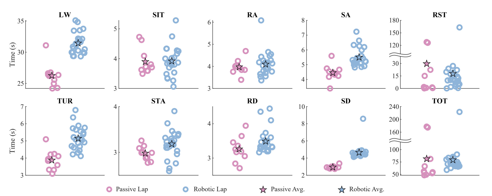

Improving Amputee Endurance Over Activities of Daily Living (IROS 2023)
Research · Case Study
IEEE IROS 2023
Powered Knee-Ankle Prosthesis
Mid-Level Control
Endurance Evaluation


This IROS 2023 case study demonstrates that a powered knee-ankle prosthesis, when paired with a continuous, phase-based mid-level controller, can substantially improve user endurance during demanding activities of daily living— even when traditional time-based performance metrics show little or no improvement.
What I contributed
- Integrated multiple continuous prosthesis controllers (sit/stand, walking, ramps, and stairs) into a unified mid-level control framework.
- Designed phase-based impedance and kinematic control laws that adapt continuously to task demands rather than relying on discrete modes.
- Helped design and analyze a challenging endurance-focused experimental protocol that reveals benefits invisible to standard timed tests.
Key findings
- The participant completed over twice as many laps with the robotic prosthesis compared to a passive microprocessor knee.
- Time-based metrics failed to capture this benefit, highlighting endurance as a more meaningful clinical outcome.
- Continuous mid-level control produced biomimetic joint kinematics and kinetics across diverse activities without manual retuning.
Skills highlighted
Phase-Based Control
Impedance Control
Robotic Prosthesis Control
Biomechanics & Gait Analysis
Clinical Evaluation Design
Ph.D. research conducted in the LocoLab at the University of Michigan, advised by Prof. Robert D. Gregg.